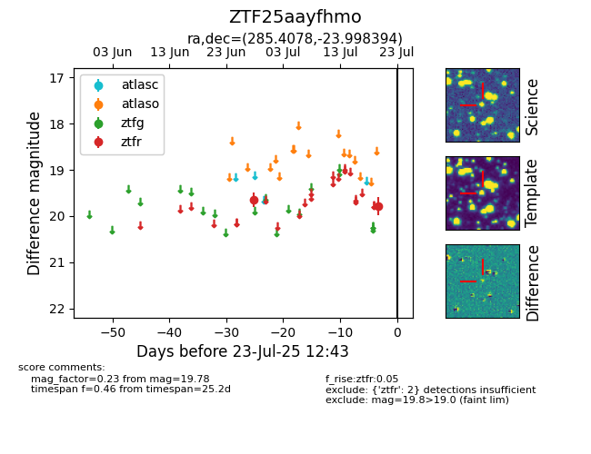

Target ZTF25aayfhmo at 2025-07-23 12:43, see:
FINK: fink-portal.org/ZTF25aayfhmo
Lasair: lasair-ztf.lsst.ac.uk/objects/ZTF25aayfhmo
ALeRCE: alerce.online/object/ZTF25aayfhmo
alt names
ZTF25aayfhmo (ztf,fink)
coordinates:
equatorial (ra, dec) = (285.4078,-23.99839)
galactic (l, b) = (12.3098,-12.80324)
photometry
last ztfr=19.78
2 ztfr detections
